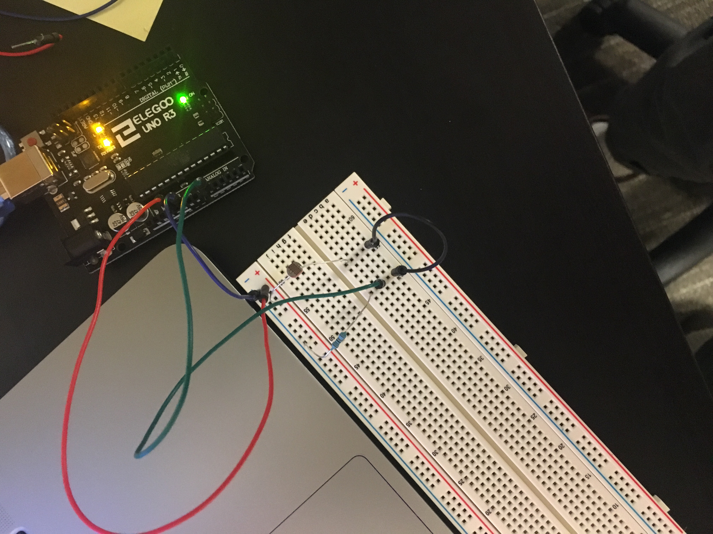
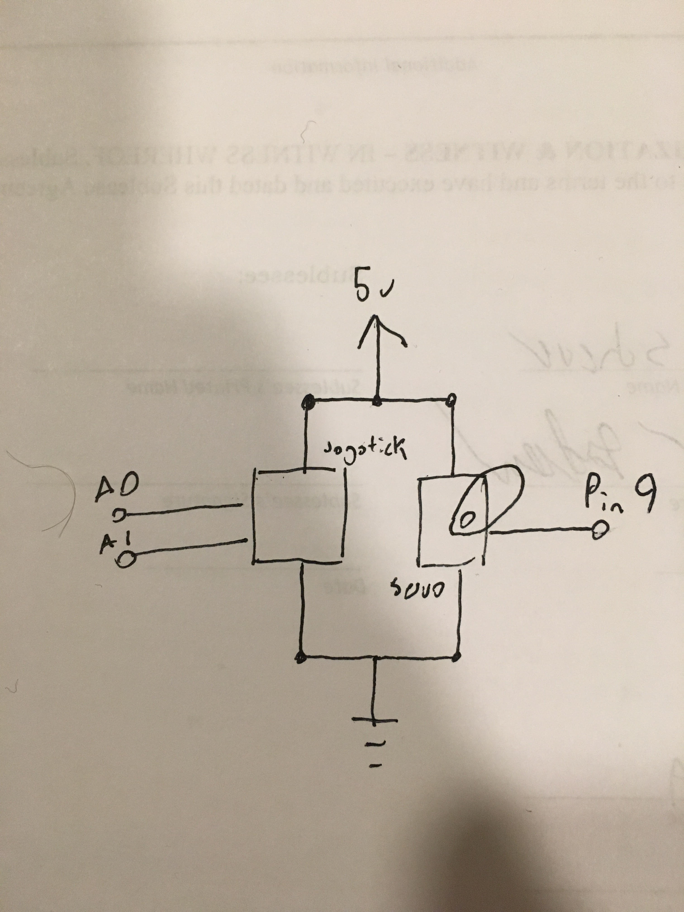

Espen Scheuers's Assignment 6!
Here is a video of assignment 6.

Here is a photo of assignment 6.


Here is the arduino code for Assignment 6:
int lightPin = 0; //set up the pin for the sensor
void setup()
{
Serial.begin(9600); //Begin serial communcation
}
void loop()
{
Serial.println(analogRead(lightPin)); // analogreads the photoresistor pin
delay(10); //delay to make the changes more noticable
}
Here is the p5 code for Assignment 6:
var serial; // variable to hold an instance of the serialport library
var portName = '/dev/ttyACM0' //rename to the name of your port
var datain; //some data coming in over serial!
var xPos = 0;
function setup() {
serial = new p5.SerialPort(); // make a new instance of the serialport library
serial.on('list', printList); // set a callback function for the serialport list event
serial.on('connected', serverConnected); // callback for connecting to the server
serial.on('open', portOpen); // callback for the port opening
serial.on('data', serialEvent); // callback for when new data arrives
serial.on('error', serialError); // callback for errors
serial.on('close', portClose); // callback for the port closing
serial.list(); // list the serial ports
serial.open(portName); // open a serial port
createCanvas(1200, 800);
background(0x08, 0x16, 0x40);
}
// get the list of ports:
function printList(portList) {
// portList is an array of serial port names
for (var i = 0; i < portList.length; i++) {
// Display the list the console:
print(i + " " + portList[i]);
}
}
function serverConnected() {
print('connected to server.');
}
function portOpen() {
print('the serial port opened.')
}
function serialError(err) {
print('Something went wrong with the serial port. ' + err);
}
function portClose() {
print('The serial port closed.');
}
function serialEvent() {
if (serial.available()) {
datain = Number(serial.readLine());
//console.log(datain);
}
}
function graphData(newData) {
// map the range of the input to the window height:
var yPos = map(newData, 0, 255, 0, height);
// draw the line in a pretty color:
stroke(255, 0, 80);
line(xPos, height, xPos, height - yPos);
// at the edge of the screen, go back to the beginning:
if (xPos >= width) {
xPos = 0;
// clear the screen by resetting the background:
background(0x08, 0x16, 0x40);
} else {
// increment the horizontal position for the next reading:
xPos++;
}
}
function draw() {
graphData(datain)
//background(0);
//fill(255);
//if (datain == 0) {
// text("button pressed: YES", 30,30);
//} else {
// text("button pressed: NO", 30,30);
//}
}